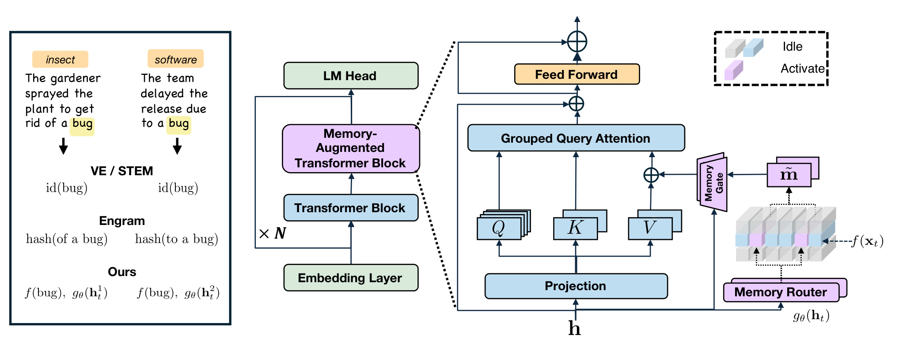
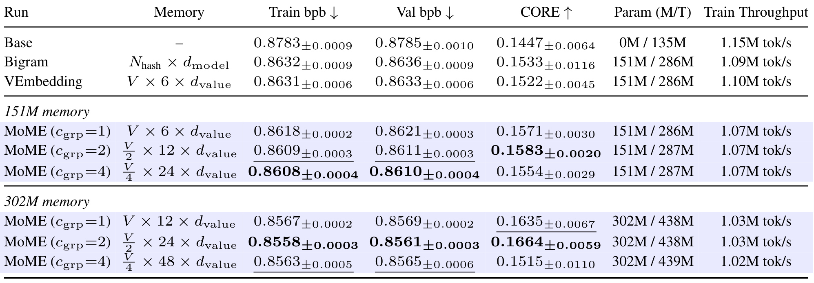
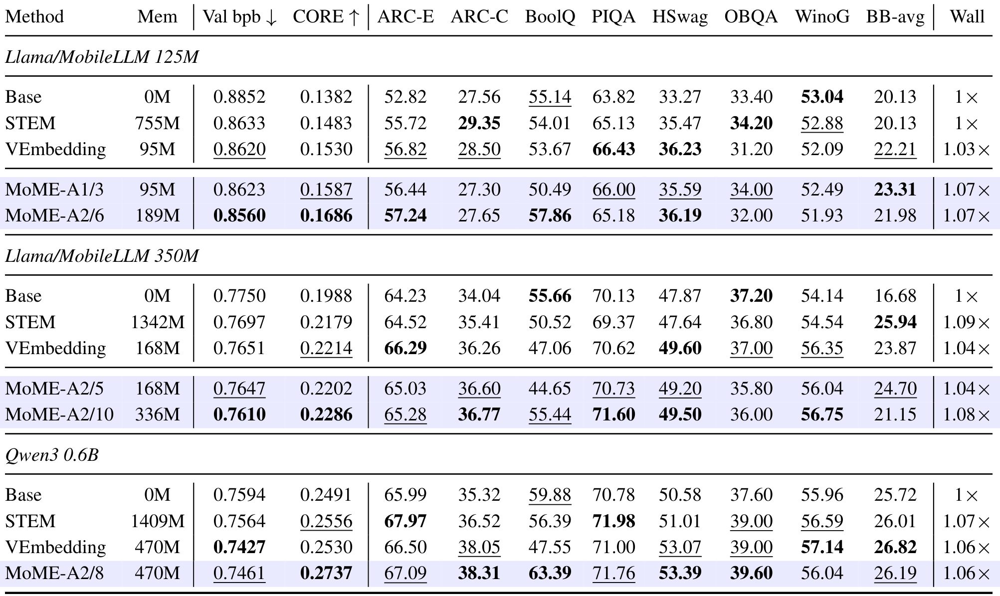
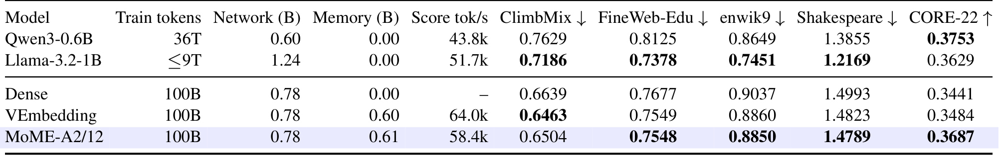
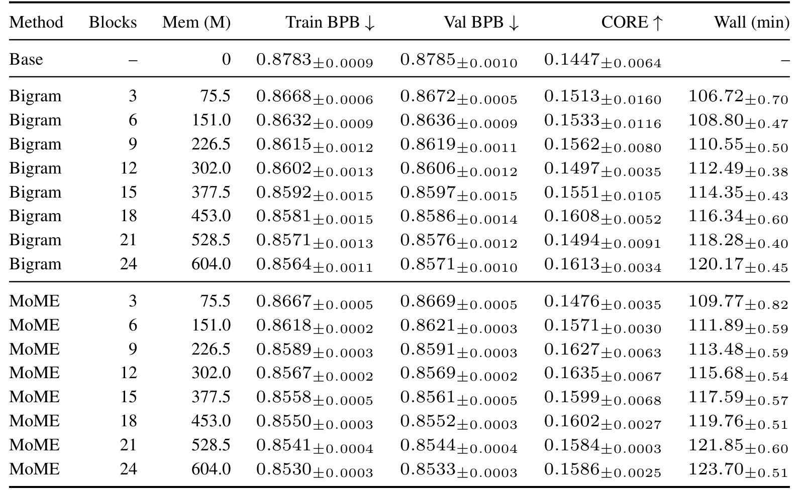
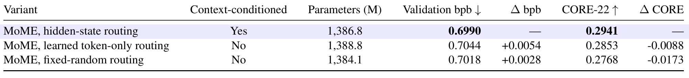
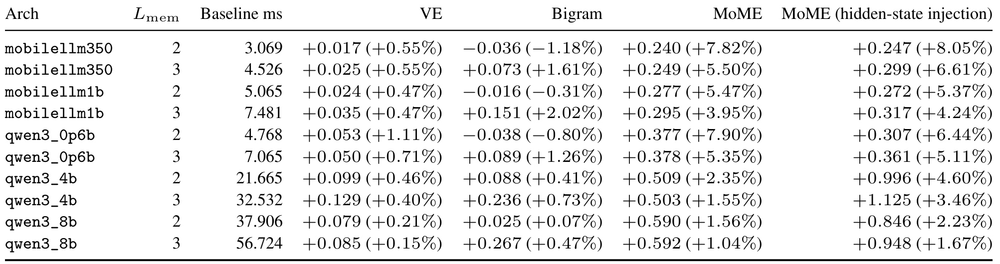
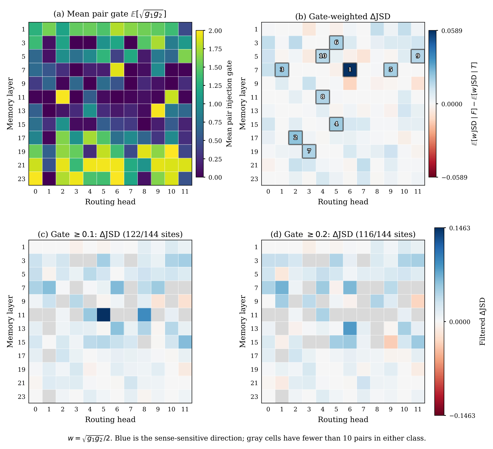

MoME：用上下文选择记忆槽的稀疏嵌入
《MoME: Mixture-of-Memory Embeddings for Context-Aware Sparse Lookup》由 Muchen Li、Leonid Sigal、Renjie Liao 撰写，一作主机构为英属哥伦比亚大学，合作机构包括 Vector Institute，2026 年 9 月 14 日公开于 arXiv。它研究语言模型内部的参数化记忆，尝试让同一个词根据当前语境读取不同的记忆向量。论文入口。本轮核验时，PDF 所列 GitHub 代码入口返回 404，不能确认代码已经公开可用；作者的 MoME 模型页 可以访问。
现有记忆嵌入通常按词元或固定局部词组确定查表地址，同一个词在不同上下文里的含义因此被压进同一份固定记忆。要保留廉价查表的优势，又让读取的记忆适应语境，就需要把上下文带入记忆选择过程。
1. 背景和问题
语言模型扩容通常先想到增加层数、宽度或前馈网络规模。这样做能提高容量，但大量参数会在处理每一个词元时参与计算，训练和推理代价随之上升。稀疏专家模型把参数容量与每个词元的活跃计算部分分开，让不同输入只走少数专家。本文讨论的是另一条可以并行发展的路线：把一部分知识或局部关联存入可学习的嵌入表，通过索引直接读取，再交给主干组合。模型仍然需要注意力和前馈网络完成上下文推理，但无需把所有局部模式都通过稠密计算重新构造。这里的记忆是训练得到的模型参数，不是聊天软件保存的历史记录，也不是从外部文档库检索出来的一段文字。
作者从已有记忆增强模型中抽出了一个很有用的区分：记忆怎么被寻址，与记忆怎么被融合，是两个独立问题。 Value Embedding 按词元身份取向量，然后加到注意力的值向量中；STEM 也按词元索引，但作用位置是前馈网络的中间状态；Per-Layer Embedding 将查表结果注入层输入；Engram 可以按局部词组哈希找到条目，再使用依赖隐藏状态的门控制融合。注入位置各有不同，却未必改变索引的确定性。即使融合门能够根据语境关闭一条记忆，那个已经取出的向量仍然可能把多种词义混在一起。因此，不能把“用上下文决定加多少”当作“用上下文决定读什么”的同义表达。
以 python 为例，数据处理程序和动物园描述需要不同联想；bank 既可以指金融机构，也可以指河岸。若每个词元只有一个固定记忆向量，两个语境都要访问同一存储位置。主干当然可以在后续计算里重新解释这个向量，但记忆分支没有直接提供区分语义的能力。固定二元词组能够增加局部上下文，却仍受窗口限制。例如相邻词都接近“the bank”，真正决定词义的贷款、支票或独木舟信息可能出现得更早。作者的目标不是证明固定查表完全无用，而是指出当模型已算出了包含前缀信息的隐藏状态时，读取记忆仍完全忽略这个状态，会浪费已有的语境信号。
另一个问题是容量分配。词表里存在语义高度重叠的不同形态，例如单复数或近义表达，它们各自占据独立行，可能重复存储相似内容；另一方面，一个多义词只占一行，却需要表达多种相距较远的模式。两者一起出现时，简单地扩大所有行的向量宽度，未必是最合适的容量使用方式。MoME 因此把“行”和“槽”拆开：先由词元找到一行，再让上下文在行内挑选少量槽。可选的词元分组还允许相近词共享行，把节省的行容量转换为更多槽。不过分组只是辅助设计，大部分跨主干比较没有启用，不能把论文的主要增益一概解释成聚类收益。
这项工作的研究问题可以分成三个层次。第一层是表达能力：在同样的记忆规模下，多槽与上下文门是否优于固定读取。第二层是系统代价：挑选槽、计算权重和聚合向量增加的算子，是否仍然足够便宜。第三层是解释性：不同词义是否真的导致不同路由，且这种差异是否经过注入门后仍可能影响主干。三层证据不能互相替代。看见某个词在热图里选择不同槽，只说明路由关联；看见总分提高，只说明整个模型更好；二者结合仍不足以证明某个槽保存了明确的人类词义，更不足以证明这个槽是性能提升的唯一来源。
公平对照还涉及预算的选择。等参数比较控制的是可存储容量；等训练词元比较控制的是数据曝光；等训练浮点运算比较控制的是算力。模型增加稀疏参数后，可以在较少额外计算下存储更多向量，但查表带来的显存访问和内核启动成本不体现在一个简单的参数计数里。反过来，扩大稠密主干在相同算力预算下会减少可训练词元数，所以等算力结论不能自动解释为等数据结论。本文主表和附录使用了不同口径，读每个结果时都要先确定被固定的预算，以及哪些成本仍然变化。
本文的证据主体来自小规模或亚十亿主干的从头预训练，包括 nanochat、Llama/MobileLLM 风格和 Qwen3 风格架构，而不是给一个已经成熟的大模型临时外挂记忆后直接获得能力提升。文中的较大规模推理延迟测试覆盖到四十亿和八十亿架构，它们回答的是额外算子的运行时间，不提供相应尺度的完整训练效果。这个区别尤其影响对“可扩展性”的理解：作者展示了在所测试记忆范围内的趋势，也展示了较大主干上相对延迟占比下降，但尚未把两类实验合成大规模能力扩展定律。
对读者而言，这篇论文最值得抓住的是一个结构选择：把已经得到的上下文表示用于局部记忆寻址，同时让存储表继续保持按词元快速定位。它介于完全固定的嵌入和全局内容寻址之间，减少全库搜索需求，却也保留了首阶段行索引的约束。如果正确知识不在所选行的任何槽里，第二阶段路由再聪明也无法读取其他行。这样的有限适应能力换来更清晰的计算路径，也是后续看分组、槽数和失败结果时需要一直保留的前提。
稀疏专家与稀疏记忆的区别也需要落到运算对象上。专家分支通常对输入执行带参数的非线性变换，记忆槽在这里首先是直接读取的向量，随后才被主干利用。因此，槽数增加主要扩展可存储内容，不能简单等同于增加同样数量的推理专家。本文借用了稀疏门控的选择形式，却把选择对象变成一行内的嵌入片段。两条路线可以同时存在，联合实验也显示指标与存储、速度存在权衡。只有把每步读取向量的代价和实际专家计算分开核算，才不会从相似的混合命名误判模型具备相同的计算能力与扩展特征。
2. 方法
2.1 多槽记忆表
MoME 在部分 Transformer 层旁边加入记忆分支，普通块与记忆增强块交替出现。一个增强层的表不再为每个词元保存单一向量，而是保存多个候选槽。第一阶段索引仍然是确定性的，保证访问范围先被约束在一行；第二阶段才使用上下文选择槽。各个值头共享同一份表，但各自生成路由结果。因此，“多个注意力头”与“多个记忆槽”不是同一维度：前者对应不同的值流，后者是可供它们读取的共享存储候选。
符号解释：$x_t$ 是当前位置词元，$f$ 是固定行索引函数，$N$ 是行数，$M$ 是每行槽数，$d_{\mathrm{value}}$ 是每个值头的维度，$m_{n,a}$ 是第 $n$ 行第 $a$ 个存储向量。默认 $f$ 为身份映射，行数等于词表大小。共享表让每层记忆参数为 $NMd_{\mathrm{value}}$，而非再乘值头数 $H$；路由器本身仍有额外参数。这个节省允许每个头在相同存储上作不同选择，也意味着不能把共享槽直接命名为某个头的私有知识单元。

图的左侧用 bug 的昆虫与软件缺陷含义解释固定地址的限制，中央展示普通层和增强层的交替，右侧才是具体的分支数据流。阅读时应沿右图底部的隐藏状态向上看：标准投影计算查询、键和值；另一条路径通过路由器与词元行索引访问记忆表；读取结果经记忆门后与值向量相加，再进入注意力。紫色表示记忆相关模块，蓝色是原有计算部分，灰色与激活色块展示只读取少量槽的思想。原图同时画出多个子面板，是一张完整方法图，不能只截出彩色表而丢失注入位置。
这个结构把论文贡献定位得很准确。MoME 没有替换注意力，也没有让整个上下文直接搜索任意存储位置；它把词元确定的一行变成一组可由语境重新组合的向量。两个句子里的 bug 首阶段可能访问同一行，但因前面句子已经形成不同隐藏状态，第二阶段可以得到不同的槽集合与权重。图中词义案例用于说明设计动机，不能仅凭这张概念图断言训练后每一槽都对应独立词义。真正支持上下文条件化有效性的证据，是后文保留多槽却改为词元路由或随机路由的控制实验。
另一个值得注意的细节是记忆与值投影能够并行执行，到相加时才汇合。这种依赖结构有机会减少关键路径上的等待，但不等于查表免费：路由投影、选取、聚合和门控仍需内核执行及内存访问。若主干很小，这些固定开销可能占据较高比例。图里的门也不负责挑选槽，挑槽发生在路由器内部；门只缩放聚合后的记忆输出。把这两种门混为一谈，会误读后面的语义路由分析：某个头可以路由得非常有区分度，同时又通过接近关闭的融合门几乎不把结果注入值流。
2.2 上下文路由与聚合
对每个值头，路由器将进入增强块的隐藏状态映射为槽分数，选择最大的若干项。默认激活两个槽，记为 A2/M。主文使用隐藏状态描述统一机制；附录配置表进一步说明 Llama/MobileLLM 实验的路由输入使用值表示，而 nanochat 和 Qwen3 使用隐藏状态，复现时不能忽略这个实现差别。它们都能依赖先前层形成的语境，但计算依赖与投影维度并不完全相同。路由在当前位置只能看因果前缀，不允许用目标词之后的文字辨义。
符号解释：$h_t$ 是块输入隐藏状态，$i$ 是值头编号，$W_g^{(i)}$ 与 $b_g^{(i)}$ 是可训练投影，$\ell$ 是长度为 $M$ 的分数，$K$ 为激活槽数，$A$ 为选中索引集合，$\sigma$ 是 sigmoid，$\alpha$ 是混合权重，$\widetilde m$ 是聚合记忆。先选槽、再在选中槽内归一化让输出是少量存储向量的组合，而不是对整行做稠密平均。当 $K=1$ 时论文另用全槽 softmax 中被选中项的概率作为权重，即 $\alpha_{t,a}^{(i)}=[\operatorname{softmax}(\ell_{t,i})]_a$；它不一定等于一，不能把单槽分支机械化成硬查表。路由不需要人工词义标签，记忆与主干共同由语言建模训练信号塑造。槽选择仍可能集中到少数候选，拥有多个槽不代表它们被均衡使用。
2.3 固定词元分组
可选的分组函数来自一个轻量预训练的参考嵌入，在离线阶段按向量相似性构造近邻匹配。训练期间行映射冻结，推理时只读取这张映射表，不在线执行近邻搜索。其目标是让重叠语义的词元共享一行，减少行维度上的重复，然后把节省出的参数用于扩大槽维度。这样才能在固定记忆参数预算下研究分组效果，而不是把压缩行数与减少总参数混在一起。
符号解释：$U^{\mathrm{ref}}$ 是参考词元嵌入，$V$ 为词表大小，$c_{\mathrm{grp}}$ 是分组因子，$M'$ 是容量重新分配后的槽数；近邻符号代表离线行映射构建过程，近似号表示行数的分组口径。分组因子与每次读取几个槽的 $K$ 不同。参考表来自约十亿词元的轻量 nanochat 基线训练，这也带来额外准备成本，不能假定凭空获得。分组过强可能让本来不同的词被迫共享候选池，增加槽竞争；表中四倍分组的 CORE 并不稳定领先，正是这种设计需要按目标任务选择的提醒。大部分跨主干实验保持身份映射，避免把额外参考训练作为通用必要条件。
2.4 值流门控与多头共享
聚合记忆通过独立的按头残差门进入值流。路由门决定读哪些槽以及各槽占比；残差门决定整份聚合结果向主干注入多少。把两者拆开允许模型保留细粒度寻址能力，同时在某层或某个头上抑制不合适的记忆。参数表是共享的，路由器和注入门输出却按头区分，所以头之间可以读取同一槽，也可以选择不同槽。
符号解释：$v_{t,i}$ 是标准值向量，$\gamma_{t,i}$ 是第 $i$ 个头的注入强度，$\widetilde v$ 是增强值向量，$W_\gamma,b_\gamma$ 是门控参数。系数二使零门分数对应强度一，取值区间为零至二。这个公式说明记忆分支在相加之前不会改变标准值投影的输入，因此适合与投影并行调度；若改为向隐藏状态先注入再计算后续模块，依赖链可能更长。它也解释了为何只分析路由分布不够：即便两种词义选择完全不同的槽，若两次注入门都很小，对最终值向量的实际扰动也可能极小。本文没有通过干预单槽直接建立预测贡献，后面的门加权分析只是缩小这个解释缺口。
3. 实验结果
3.1 固定算力与参数的基础比较
主要指标包含验证与训练 bits per byte，以及二十二项任务的 CORE。前者按目标字符的 UTF-8 字节长度归一化负对数似然，越低越好；后者将各任务准确率按随机基线中心化后平均，越高越好。它不是原始准确率百分比，因此不能把从零点一五提升到零点一六直接写作“准确率百分之一”。原始任务还涵盖问答、常识选择、语言建模与模式任务，平均分可能掩盖不同能力方向的回退。
符号解释：$y_j$ 是计入评测的目标词元，$\operatorname{bytes}$ 是其字节数，$J$ 是任务数，$a_j$ 是任务准确率，$r_j$ 是任务随机基线。特殊和忽略词元按评测协议排除。基础实验使用 FineWeb-Edu，共享三万二千级词表与长度二千零四十八的序列；d12 比较固定约 $3\times10^{18}$ 训练 FLOPs，约对应三十三亿词元，表中报告三种子均值与标准差。

表中首先要分开看无记忆基线和相同记忆预算的增强模型。Base 只有一亿三千五百万参数，其他基础行额外增加一亿五千一百万记忆参数，所以对 Base 的收益同时包含增加容量的作用。更能隔离设计差异的是 Bigram、Value Embedding 与相同预算的 MoME：验证 bpb 分别为 0.8636、0.8633 与无分组的 0.8621；二倍分组进一步到 0.8611。对应 CORE 是 0.1533、0.1522、0.1571 与 0.1583，表明在这个小规模等算力设置下，上下文多槽具有正向效果。二倍分组相对 Value Embedding 的 CORE 绝对差是 0.0061，不能写成六个百分点的任务准确率提升。
第二组把记忆容量提高到三亿零二百万，二倍分组得到验证 bpb 0.8561 和 CORE 0.1664。但四倍分组的 CORE 为 0.1515，标准差达到 0.0110，明显没有沿着语言建模损失的改善同步增长。甚至在较小预算中，四倍分组的 bpb 略优于二倍分组，却不拥有最高 CORE。因此，压缩词表行并扩大候选槽的作用不是单调的，也不能据此宣布所有同义词应尽量合并。行共享会改变容量竞争以及读出选择，最终效果取决于任务和训练稳定性。
吞吐列同样是结果的一部分。Value Embedding 为每秒一百一十万词元，MoME 基础档约一百零七万；Bigram 为一百零九万。作者所说相对 Bigram 小于百分之二的开销，对应这一特定比较，不能扩大成相对任意基线都几乎无成本。与无记忆模型的一百一十五万相比降幅更大，扩大记忆后吞吐还降到约一百零三万。实际采用时应把指标收益与吞吐代价一起比较，尤其要保留误差条：不同种子的 CORE 波动比 bpb 更明显，有限重复数支持的是实验范围内的趋势，而不是所有指标的显著性承诺。参数栏还同时列出记忆量和总量，二倍分组总量略增，反映路由等非表参数也必须计入，不能仅凭相同表大小宣称整个网络严格逐参数一致。
3.2 跨主干的等词元检验
接下来作者让机制跨越三种主干规模，固定各自训练词元数而不是固定不同方法的全部参数。小档使用五十亿词元，中档与 Qwen 风格使用二百亿词元。STEM、Value Embedding 和不同槽数的 MoME 记忆规模并不总是相同。该表更适合检验机制在不同配方下是否仍有作用，同时也能挑选局部等记忆行作更严格比较；不能把整张表统称为等参数实验。

每一块的第一列是方法，第二列是记忆参数，后面是 bpb、CORE、多项原始准确率和相对训练时间。小档里，九千五百万记忆的 MoME-A1/3 的 CORE 为 0.1587，高于同容量 Value Embedding 的 0.1530，但验证 bpb 0.8623 略差于 0.8620。更大的 A2/6 达到 CORE 0.1686，同时记忆也约翻倍，不能把两行差异完全归因于激活两个槽。相对 STEM，则可以说明在这个配方下 MoME 使用更少记忆获得更好综合指标，而不是对所有既有实现给出容量效率定律。
中档的负向结果尤其值得保留。同为一亿六千八百万记忆参数，MoME-A2/5 的验证 bpb 0.7647 略好于 Value Embedding 的 0.7651，CORE 却从 0.2214 降到 0.2202；BoolQ 从 47.06 降到 44.65，OpenBookQA 也更低。将记忆扩为三亿三千六百万后，CORE 到 0.2286，但这同时改变了容量。Qwen 风格的同容量比较则反过来：MoME 的 CORE 0.2737 显著高于 0.2530，BoolQ 从 47.55 到 63.39，验证 bpb 却从 0.7427 变为更差的 0.7461，WinoGrande 也有所回退。
这些交叉结果说明下游组合能力与语料平均似然不会总是同向移动，不能从某一列加粗概括成全任务领先。训练 Wall 大致为无记忆基线的一点零四至一点零八倍，在 Qwen 同容量比较里两种方法都为一点零六倍，但各家相同墙钟比例并不等于相同实际秒数，更不意味着跨硬件可直接比较。附录还说明跨主干表使用可用的完成运行，小档复现为单种子；统计证据强度不同于前一张三种子表。若复现目标是某种具体能力，需要查看完整二十二项原始分数，再对目标任务做重复运行，而不能仅追随 CORE 的平均收益。三个家族共享的是本文训练的词表与评测环境，因此表中的 Qwen 风格行并不等于对官方公开检查点做直接改造后的结果；架构迁移成功与预训练权重兼容是不同问题，后者仍需单独实验。
3.3 一千亿词元训练与域外表现
更长训练将 nanochat d24 的网络参数提高到约七亿八千万，加入约六亿记忆参数。表中以一千亿词元简称同一训练块，正文给出的实际曝光量为 104.858B ClimbMix 词元。Qwen 与 Llama 的外部预训练模型被放在表上方用于定位能力，它们的数据、词表与词元曝光不同，不能与内部训练行建立严格因果比较。

表下半部分才是受控比较：Dense、Value Embedding、MoME 使用相同级别网络与训练词元。MoME 的 CORE 为 0.3687，超过 Value Embedding 的 0.3484 和 Dense 的 0.3441，说明基础实验的综合能力收益在更长训练后仍能观察到。三个域外语料上的 bpb 也略优于 Value Embedding，分别是 FineWeb-Edu 0.7548 对 0.7549、enwik9 0.8850 对 0.8860、Shakespeare 1.4789 对 1.4823。第一个差值非常小，且表中没有相应多种子误差，不能把所有域外收益说成同样稳健的大幅改善。
域内 ClimbMix 则相反，MoME 为 0.6504，差于 Value Embedding 的 0.6463；评分吞吐为每秒五万八千四百词元，低于六万四千。这个吞吐是整序列评分测量，不能换写成自回归聊天的输出速度。附录逐任务表进一步显示，MoME 的 ARC-Easy、ARC-Challenge、OpenBookQA、WinoGrande 等准确率低于 Value Embedding，综合分的上升来自其他任务收益。整体上更高的 CORE 与更低的训练域似然表现同时存在，说明多槽结构可能改变能力分配，而非单纯把整个模型统一变强。
表上半部分外部 Qwen 的 CORE 为 0.3753，略高于 MoME；外部 Llama 为 0.3629。作者由此讨论较少预训练词元下的竞争力，但两个外部模型经历了不同数据处理与训练配方，网络和总存储参数也不能只读一列。MoME 总量包含额外六亿级记忆，而外部模型没有同样的记忆分支。合理结论是这条结构路线在受控长训练中有可见价值，并达到这些外部参考附近的平均分；不能推导成用固定百分比的数据就替代某个公开模型，更不能把外部任务差异当成检验过的迁移优势。域外语料也各有偏向：百科、教育网页和文学作品检验不同分布的语言建模，不等同于用户真实任务。表中同时报告四个语料有助于发现这种差异，但尚未覆盖多语言、长上下文或交互式任务，部署外推仍需要更接近目标数据的评测。
3.4 扩容趋势与路由控制
记忆扩容是否真的更有收益，需要同时看似然和能力曲线。附录的完整表比主文只展示验证 bpb 的曲线更适合精确比较，因为它保留 CORE 的非单调性以及时间代价。实验保持 d12 主干和训练 FLOP 预算，记忆从约七千五百万扩到六亿零四百万，每一档对齐 Bigram 与 MoME 容量。

表的行按 Base、Bigram、MoME 分组，两个增强方法分别从三块增加到二十四块，每块对应约两千五百万记忆参数。列中依次给记忆规模、训练与验证 bpb、CORE 以及训练分钟，正负项为三种子的标准差。对齐相同块数的两行，就能控制记忆容量比较方法。在训练与验证列里，MoME 随更大容量取得更低的 bpb，标准差一般也更小。例如最大档验证值为 0.8533，而 Bigram 为 0.8571。这为“在所测小模型范围内，更有效地把额外记忆容量转化为语言建模收益”提供了支持，也表明相同预算下稀疏寻址方式值得作为独立设计变量。
CORE 列没有同样单调的结论。MoME 从中间规模起出现平台与回落，最大档 CORE 0.1586 低于 Bigram 的 0.1613，最小档也并非领先。多档CORE差距相对于标准差并不大，不能把持续降低的 bpb 直接延长为更高下游能力的保证。扩容伴随运行时间增加，附录最大档 MoME 平均约一百二十三点七分钟，Bigram 约一百二十点一七分钟。这里没有证明相同墙钟预算下仍保留全部优势，也没有覆盖更大主干或更长序列，因此表反映的是有限实验区间内的观测趋势。
作者还组合 Bigram 行索引和多槽，在固定容量内分配哈希行数与槽数。六亿零四百万预算中，同时扩两轴的验证 bpb 0.8546 优于只扩槽的 0.8550，但 CORE 排序并不完全一致。和稀疏前馈专家结合时，组合模型 CORE 最高为 0.2986，激活参数与单独模型相近，但存储参数增到约十九点九亿，训练吞吐更低；单独 MoE 的 bpb 0.6903 反而优于组合的 0.6913。因此“兼容”意味着可以联合运行并得到某些指标收益，不意味着二者叠加时存储和时间开销消失。

这张表直接检查最核心的替代解释：收益究竟来自多了几个可训练槽，还是来自根据上下文选择。三行都保留多槽结构，参数与约六乘十的十九次方训练 FLOPs 近似匹配，分别使用隐藏状态路由、可学习的词元条件路由和固定随机路由。列里的差值定义为控制组减去 MoME，所以 bpb 的正差表示控制组更差，CORE 的负差同样表示控制组更差。隐藏状态方案得到 0.6990 与 0.2941；词元条件方案为 0.7044 与 0.2853；随机方案为 0.7018 与 0.2768。这个方向支持上下文选择确实有价值，不能用“只要增加同样大小的槽表就够了”解释全部收益。
不过这个控制仍是 d24、ClimbMix、单种子的局部实验，三行参数只是接近而非完全相等，不能给出各种模型上的收益下界。它也没有隔离每种词义如何被存储，更没有证明路由的语义清晰程度与准确率严格对应。可学习词元路由的 bpb 甚至弱于固定随机路由，却拥有更高 CORE，再次提醒两个目标会分离。若要进一步验证机制，应在同一初始化和多个种子下对比路由方式，结合目标任务分数、槽利用率和注入门，再检查把路由固定之后的性能变化。
附录等延迟与等总参数的稠密对照给出另一层证据：MoME 在固定训练算力下综合指标更好。但等总参数稠密模型因为更多参数每步都参与计算，在同预算下处理更少词元，所以这是一种资源分配优势的比较，不能解读成相同训练数据下结构无条件更优。另一个固定算力基线表中 Bigram 验证 bpb 0.6943 优于 MoME 0.6990，而 MoME CORE 更高。保留这些负向对照，会让结论从“全面替代固定记忆”收敛为“提供一个有效但依赖指标和预算的记忆结构选择”。
3.5 推理延迟与可部署性
路由选择需要计算，实际推理应该测量毫秒而非只看额外 FLOPs。原文用两档记忆层数测量不同架构的局部推理基准，同时比较注入值流与注入隐藏状态的 MoME 变体。后者是注入位置消融，不能把它当作完整 canonical Engram 的运行时间。

第一列是架构，第二列为基准中包含的记忆注入层数，第三列是无记忆基线的绝对毫秒；其余列先给相对基线增加的毫秒，再给百分比。以四十亿 Qwen 风格的两层测量为例，基线 21.665 毫秒，值流 MoME 增加 0.509 毫秒，约 2.35%；隐藏状态注入增加 0.996 毫秒，约 4.60%。这支持值流注入在较大计算块中可以缩短记忆分支造成的串行等待。八十亿三层基准的相对开销降至 1.04%，但绝对新增时间仍为 0.592 毫秒，不能说扩到大模型后绝对开销也消失。
小模型上的开销更明显，三亿五千万两层配置约为 7.82%，Qwen 六亿两层约为 7.90%；后者隐藏状态注入只有 6.44%，值流路径并没有在每个架构上都更快。十亿两层也存在轻微反向差异，说明可并行的数据依赖只是提供优化机会，实际收益仍取决于矩阵大小、内核调度和硬件行为。Bigram 的少数负增量很小，更适合作为测量波动观察，不能宣传加模块反而稳定加速。表中没有提供置信区间，不宜对这些细小差距下强结论。
部署时还应区分局部测量、整序列评分与端到端生成。排队、批量、缓存长度以及内存带宽可能改变路由的相对代价；表里用两层或三层构成的基准也不能直接乘到整模型吞吐上。四十亿与八十亿行只证明这些形状上模块能运行并量到低比例额外延迟，没有相应尺度训练结果，不能据此宣称大模型质量增益已经验证。本文的实用贡献是给出一种可并行的注入位置并展示代价范围，后续真正移植仍需在目标服务的实际序列和批量分布上重新测量。
3.6 语义路由与注入门
作者的案例中，同一个 bank 在金融语境偏向槽七，在河岸语境偏向槽六；类似差异也出现在 bug、python 等词。但挑选案例有选择偏差，于是附录用 WiC 做量化：从自然句子词义对中筛选目标表面形式一致、单词元表示一致且目标位于后半句的配对，最终保留六百七十对，检查一百四十四个层与头的位置。后半句条件为因果路由提供足够前缀，样本也因此偏向名词与特定上下文长度。
符号解释：$i$ 表示句子对，$s$ 是层与头位置，$q$ 是两次目标词出现时的完整路由分布，$T/F$ 表示相同或不同词义，$d$ 为以二为底的 Jensen–Shannon 散度，$\widetilde O$ 是扣除随机重叠期望后的槽集合重叠，$w$ 根据两次注入门共同大小加权。正的散度差以及同义条件下更大的重叠，符合词义敏感假设；门加权则使几乎不注入的头影响减小。

左上是每个层与头的平均注入门，右上是门加权后的不同词义减相同词义散度，下方两个面板按两次门都超过零点一或零点二过滤，灰色单元表示类别样本不足。蓝色为符合假设的方向，红色相反。未加权统计中，一百四十四处有一百一十七处不同词义的路由差异更大，最大效应在第十一层第八头；但该头注入门接近关闭。加上门权重后最大效应转到第七层第六头，效应为 0.0589，逐点自助法百分之九十五区间为 0.0167 至 0.1016。图让“路由看起来懂词义”和“记忆确实被放进值流”之间的区别变得可见。
即使保留开放的注入门，结果也仍然是相关性证据。作者没有在这些句子上干预某个槽并测量预测变化；平均注入范数大也不自动代表因果贡献大。样本仅有八十一种目标词同时含两类词义标签，混合比较可能受词汇构成影响；WiC 训练与测试划分合并后用于分析，不是在独立留出集上检验泛化；最大效应从同一批数据的一百四十四处位置中挑选，区间也没有多重比较校正。因此能说模型学到了与词义相关的路由差异，不能说已经形成可直接编辑、稳定且因果可解释的词义数据库。
此外，跨语料槽利用率显示路由质量并不均匀分散：ClimbMix 的加权有效槽数约为 3.265，Shakespeare 约为 2.959，远低于十二个候选槽；每次只激活两个槽，而重复词元的有效槽数超过二，支持随上下文变化。这里的统计对象是层、头、槽选择的集中程度，不是整个词元记忆表被训练或覆盖的比例。将“有效槽数较低”直接解释成其他存储无用，或者将有变化的路由直接解释成完整词义分工，都会超出这些审计数据本身能够回答的问题。
4. 总结
MoME 给参数化记忆增加了一个清晰的新自由度：同一个词元行可以存放多个候选向量，再由当前语境选择少量槽。它保留首阶段按词元定位的简单访问路径，把上下文适应性放在行内局部混合上，最后通过独立的按头门注入值流。相较于只根据语境调节固定记忆强度的办法，选择内容本身也发生变化。这个拆分使记忆模块既容易理解，也容易设计控制实验：固定多槽数量，再改变路由输入，就能直接检验上下文条件化的价值。
证据最扎实的部分是小规模受控预训练、路由控制以及长训练内部对照。在等记忆与等算力的 d12 设置中，它通常拥有更好的验证 bpb；多槽路由控制也支持上下文信号带来增益；更长 ClimbMix 训练保留了综合任务分数提升。但同容量跨主干比较并不全胜，中档的 CORE、Qwen 风格的 bpb、长训练的域内似然以及若干具体任务都有回退。记忆扩容对 bpb 较平滑，对 CORE 则可能进入平台。因而本文支持的是一条值得研究的容量配置路线，而非所有指标统一提高的即插即用模块。
系统方面，值流注入允许与标准投影并行，较大形状的测量中比隐藏状态注入更省延迟；小形状则不一定占优。总存储参数、每词元激活参数、训练吞吐和推理延迟是四个不同量，不能从“稀疏”两个字推导出整体成本很低。尤其联合稀疏前馈专家时，激活参数相近而存储显著扩大、吞吐下降，说明扩容收益依然需要付费。工程评估应先明确是在算力受限、显存受限还是服务延迟受限的场景，再选择对照预算。
解释性分析提供了有价值的方向，却同时展示了其边界：路由最能区分词义的头可能几乎关闭注入门。只有把选槽、混合权重和实际注入强度一起看，才能避免用漂亮案例代替有效机制。接下来更有说服力的实验是对固定词义集合建立独立测试，再对槽路由或记忆向量做受控干预，测量下游预测变化，并对多头搜索作统计校正。这样才可能从“相关于词义”迈向“某些记忆内容如何影响预测”的因果解释。
若准备复现，优先选择同一个主干下的等记忆比较，把行数、槽数、激活数和路由输入全部写清。先复现身份行索引，再决定是否值得引入离线分组参考训练；否则很难区分分组本身与额外预训练的作用。保持数据、词表、序列长度、优化器分组和评测协议一致，同时报告至少多个种子的 CORE 与目标任务分数。对于吞吐，应把整序列评分和逐词生成分开测量，并记录批量和缓存条件。公开代码在本轮尚无法访问，这使完全按作者实现复现实验存在实际缺口，模型页可访问只说明存在可检查的权重入口，不能替代训练代码和环境信息。
对于后续模型结构研究，最有价值的比较是把这条记忆分支与现有固定嵌入、局部词组索引和稀疏专家放在统一资源约束下看。若预算主要允许增加存储，行内多槽可能是合理候选；若服务被内存带宽限制，廉价算术并不一定换来廉价系统。是否迁移到推荐或个性化场景，需要重新定义索引行、可用上下文和目标损失，本文没有给出推荐实验。可以借鉴“同一实体在不同上下文读取不同参数片段”的结构思想，但不能把语言模型上的数值收益直接迁移为推荐排序的预期收益。